variable-selection.RmdSuppose we have a small dataset containing three clusters.
## Generate a dataset containing 300 2-dimensional data points
data <- rbind(rmvnorm(100, c(0,-5)), rmvnorm(100, c(0,0)), rmvnorm(100, c(0,5)), rmvnorm(100, c(0, 10)))
D = 2; N = 300; K = 4If we assume that all the covariates are independent, one can also choose to do variable selection and only retain the variables that help define the clustering.
## Use variational inference for mixture of Gaussians to find clusters
output <- vimix(data, K = 4, select = TRUE, verbose = TRUE)This is how the hyperparameters change at each iteration:
niter=length(output$L)-1
parameters <- tibble(alpha = rep(1/K, K), Nk = rep(N/K, K),
beta1 = rep(20, K), beta2 = rep(20, K),
mean1 = rep(mean(data)[1], K), mean2 = rep(mean(data)[2], K),
v1 = rep(50+D, K), v2 = rep(50+D, K),
W1 = rep(1, K), W2 = rep(2,K),
cluster = as.factor(1:K), iteration = rep(0,K))
more_parameters <- tibble(c1 = .5, c2 = .5, iteration = 0)
for(i in 1:niter){
oi <- output$model_list[[i]]
parameters <- bind_rows(parameters, tibble(alpha = oi$alpha, Nk = oi$Nk,
beta1 = oi$beta[1,], beta2 = oi$beta[2,],
mean1 = oi$m[1,], mean2 = oi$m[2,],
v1 = oi$v[1,], v2 = oi$v[2,],
W1 = oi$W[1,], W2 = oi$W[2,],
cluster = as.factor(1:K), iteration = rep(i,K)))
more_parameters <- add_row(more_parameters, c1 = oi$c[1], c2 = oi$c[2], iteration = i)
}
plotA <- ggplot(parameters, aes(x = iteration, y = alpha, color = cluster)) + geom_line() + theme(legend.position="none")
plotN <- ggplot(parameters, aes(x = iteration, y = Nk, color = cluster)) + geom_line() + theme(legend.position="none")
plotB1 <- ggplot(parameters, aes(x = iteration, y = beta1, color = cluster)) + geom_line() + theme(legend.position="none")
plotB2 <- ggplot(parameters, aes(x = iteration, y = beta2, color = cluster)) + geom_line() + theme(legend.position="none")
grid.arrange(plotA, plotN, plotB1, plotB2, ncol = 2)
plotM1 <- ggplot(parameters, aes(x = iteration, y = mean1, color = cluster)) + geom_line() + theme(legend.position="none")
plotM2 <- ggplot(parameters, aes(x = iteration, y = mean2, color = cluster)) + geom_line() + theme(legend.position="none")
plotv1 <- ggplot(parameters, aes(x = iteration, y = v1, color = cluster)) + geom_line() + theme(legend.position="none")
plotv2 <- ggplot(parameters, aes(x = iteration, y = v2, color = cluster)) + geom_line() + theme(legend.position="none")
grid.arrange(plotM1, plotM2, plotv1, plotv2, ncol = 2)
plotW1 <- ggplot(parameters, aes(x = iteration, y = W1, color = cluster)) + geom_line() + theme(legend.position="none")
plotW2 <- ggplot(parameters, aes(x = iteration, y = W2, color = cluster)) + geom_line() + theme(legend.position="none")
plotC1 <- ggplot(more_parameters, aes(x = iteration, y = c1)) + ylim(0,1) + geom_line() + theme(legend.position="none")
plotC2 <- ggplot(more_parameters, aes(x = iteration, y = c2)) + ylim(0,1) + geom_line() + theme(legend.position="none")
grid.arrange(plotW1, plotW2, plotC1, plotC2, ncol = 2)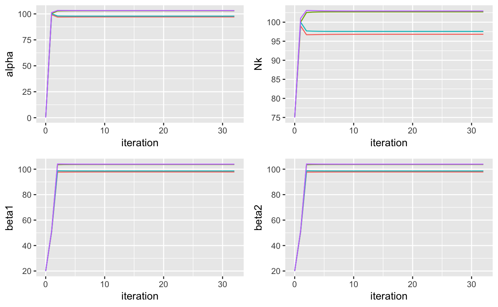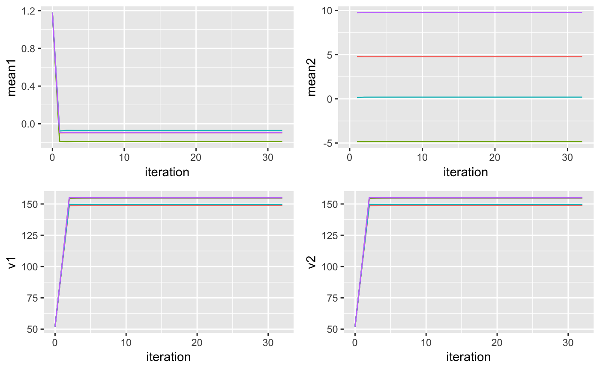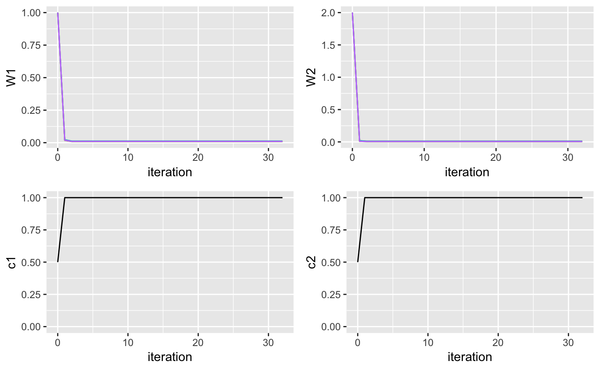 and these are the posterior densities:
library(DirichletReg)
## First variable
pi <- rdirichlet(200, output$model$alpha)
cluster <- lambda <- mean <- obs <- matrix(200, 2)
for(i in 1:200){
cluster[i] <- which(rmultinom(1, size = 1, prob = pi[i,])!=0)
lambda[i] <- rgamma(1, shape = output$model$v[1,cluster[i]], rate = 1/(2 * output$model$W[1,cluster[i]]))
mean[i] <- rnorm(1, output$model$m[1,cluster[i]], 1/(output$model$beta[1,cluster[i]]*lambda[i]))
obs[i] <- rnorm(1, mean[i], sqrt(lambda[i]))
}
samples <- c(rnorm(200, mean = mean(data[,1]), sd = stats::sd(data[,1])), obs)
library(broom)
library(ggplot2)
samples <- tidy(samples)
samples$cluster <- as.factor(c(rep('null',200), cluster))
plotX1 <- ggplot(samples, aes(x = x, fill = cluster, color = cluster)) +
geom_density(alpha = 0.1) + xlim(-10,10) + theme(legend.position="bottom")
## Second variable
pi <- rdirichlet(200, output$model$alpha)
cluster <- lambda <- mean <- obs <- matrix(200, 2)
for(i in 1:200){
cluster[i] <- which(rmultinom(1, size = 1, prob = pi[i,])!=0)
lambda[i] <- rgamma(1, shape = output$model$v[2,cluster[i]], rate = 1/(2 * output$model$W[2,cluster[i]]))
mean[i] <- rnorm(1, output$model$m[2,cluster[i]], 1/(output$model$beta[2,cluster[i]]*lambda[i]))
obs[i] <- rnorm(1, mean[i], sqrt(lambda[i]))
}
samples <- c(rnorm(200, mean = mean(data[,2]), sd = stats::sd(data[,2])), obs)
samples <- tidy(samples)
samples$cluster <- as.factor(c(rep('null',200), cluster))
plotX2 <- ggplot(samples, aes(x = x, fill = cluster, color = cluster)) +
geom_density(alpha = 0.1) + xlim(-10,10) + theme(legend.position="bottom")
grid.arrange(plotX1, plotX2, ncol = 2)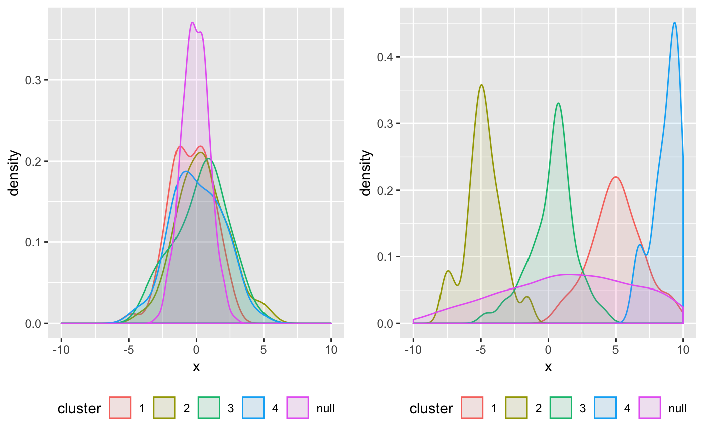
Now let’s see what our clusters look like:
## Plot cluster labels
library(ggplot2)
library(broom)
library(gridExtra)
## Convert data matrix and cluster labels to data.frame
df <- tidy(data)
df$label <- as.factor(output$label)
df <- add_row(df, X1 = output$model$m[1,], X2 = output$model$m[2,], label = as.factor(rep("Centres",K)))
## Plot clusters
ggplot(df, aes(X1, X2, col = label)) + geom_point()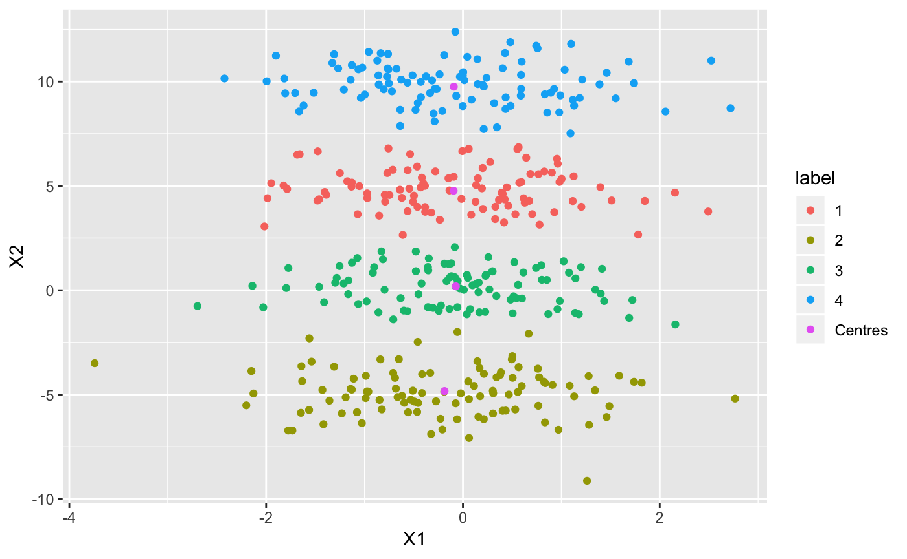
The cluster labels are calculated by taking the maximum responsibility for each data point. In this case, the responsibilities in each cluster look like this:
df <- tidy(data)
df$resp1 <- output$model$Resp[,1]
df$resp2 <- output$model$Resp[,2]
df$resp3 <- output$model$Resp[,3]
df$resp4 <- output$model$Resp[,4]
## Plot clusters
plotR1 <- ggplot(df, aes(X1, X2, col = resp1)) +
geom_point() + scale_size_continuous(breaks=seq(-1,1,by=0.25))
plotR2 <- ggplot(df, aes(X1, X2, col = resp2)) +
geom_point() + scale_size_continuous(breaks=seq(-1,1,by=0.25))
plotR3 <- ggplot(df, aes(X1, X2, col = resp3)) +
geom_point() + scale_size_continuous(breaks=seq(-1,1,by=0.25))
plotR4 <- ggplot(df, aes(X1, X2, col = resp4)) +
geom_point() + scale_size_continuous(breaks=seq(-1,1,by=0.25))
grid.arrange(plotR1, plotR2, plotR3, plotR4, ncol = 4)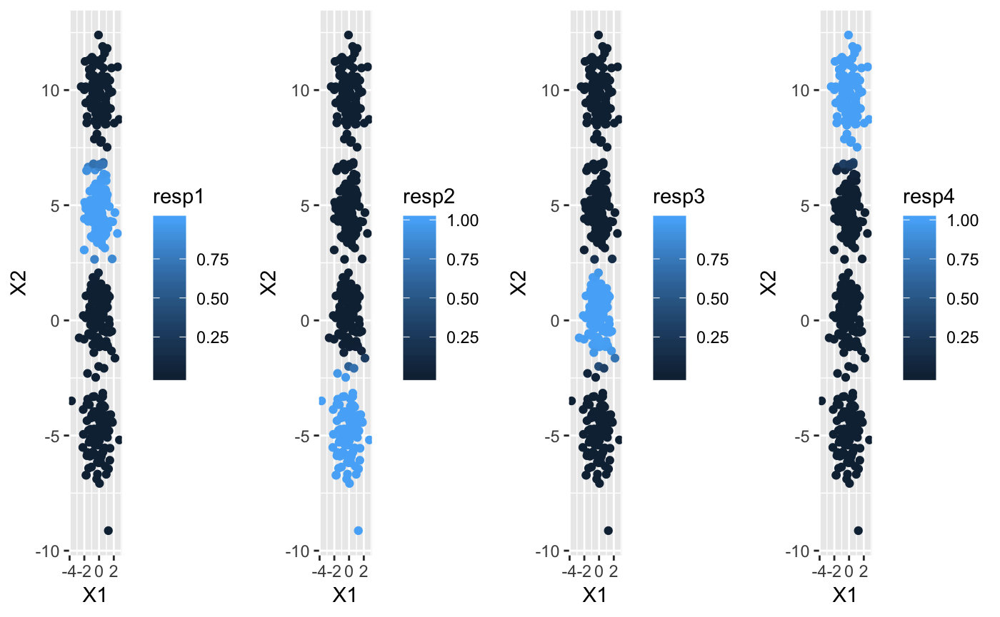
The lower bound increases at each iteration of the algorithm and can be used to check whether the algorithm has converged. Another interesting value to check at each iteration is the number of non-empty clusters.
## Check that the lower bound is monotonically increasing
lb <- tidy(output$L[-1])
lb$ELBO <- lb$x
lb$x <- NULL
lb$iter <- c(1:length(output$L[-1]))
lb$number_clusters <- output$Cl[-1]
## Plot lower bound
plot_lb <- ggplot(lb, aes(x=iter,y=ELBO)) + geom_line(linetype = "dashed") + geom_point()
## Plot number of non-empty clusters
plot_nc <- ggplot(lb, aes(x=iter,y=number_clusters)) + geom_line(linetype = "dashed") + geom_point()
grid.arrange(plot_lb, plot_nc, ncol = 2)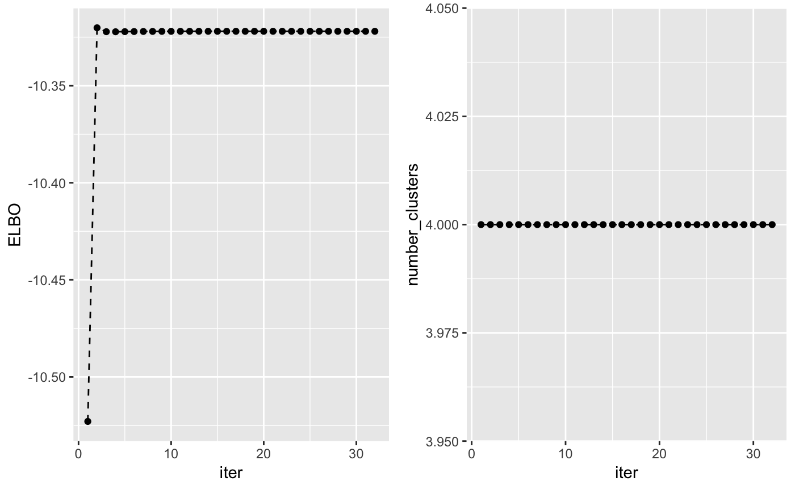
maxK <- 5
n_random_starts <- 15
ELBO <- matrix(0, maxK-1, n_random_starts)
for(k in 2:maxK){
for(j in 1:n_random_starts){
output <- vimix(data, K = k, select = TRUE)
ELBO[k-1,j] <- output$L[length(output$L)]
}
}
library(reshape)
ELBO <- melt(t(ELBO))
names(ELBO) <- c('start_n', 'K', 'ELBO')
ELBO$K <- ELBO$K + 1
ggplot(ELBO, aes(x = K, y = ELBO)) + geom_point() + geom_jitter()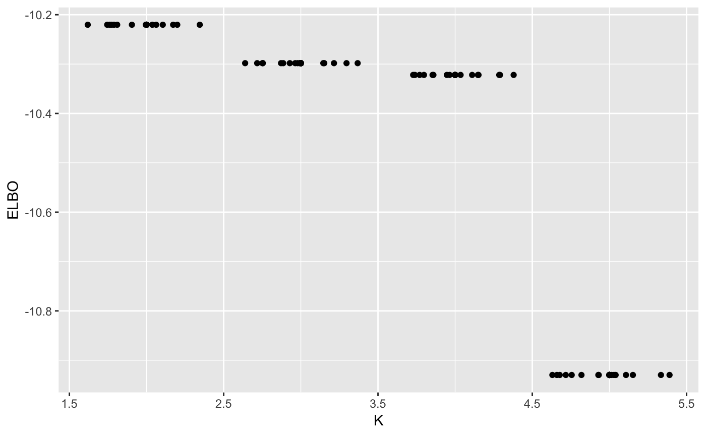
Let’s compare this to what we would have found without variable selection
## Use variational inference for mixture of Gaussians to find clusters
output <- vimix(data, K = 4, select = FALSE, indep = TRUE, verbose = TRUE)## Plot cluster labels
library(ggplot2)
library(broom)
library(gridExtra)
## Convert data matrix and cluster labels to data.frame
df <- tidy(data)
df$label <- as.factor(output$label)
df <- add_row(df, X1 = output$model$m[1,], X2 = output$model$m[2,], label = as.factor(rep("Centres",K)))
## Plot clusters
ggplot(df, aes(X1, X2, col = label)) + geom_point()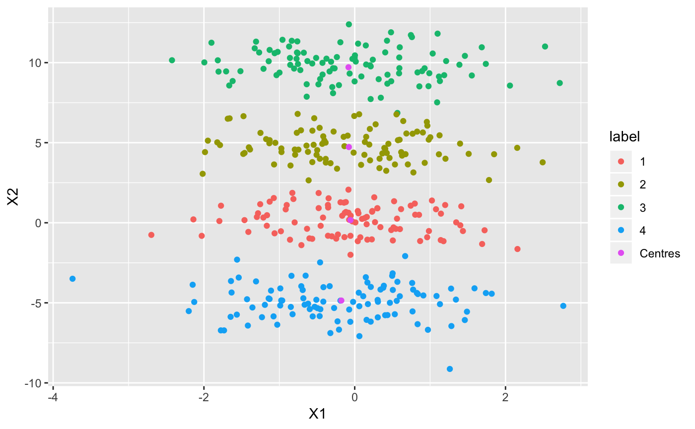
## Check that the lower bound is monotonically increasing
lb <- tidy(output$L[-1])
lb$ELBO <- lb$x
lb$x <- NULL
lb$iter <- c(1:length(output$L[-1]))
lb$number_clusters <- output$Cl[-1]
## Plot lower bound
plot_lb <- ggplot(lb, aes(x=iter,y=ELBO)) + geom_line(linetype = "dashed") + geom_point()
## Plot number of non-empty clusters
plot_nc <- ggplot(lb, aes(x=iter,y=number_clusters)) + geom_line(linetype = "dashed") + geom_point()
grid.arrange(plot_lb, plot_nc, ncol = 2)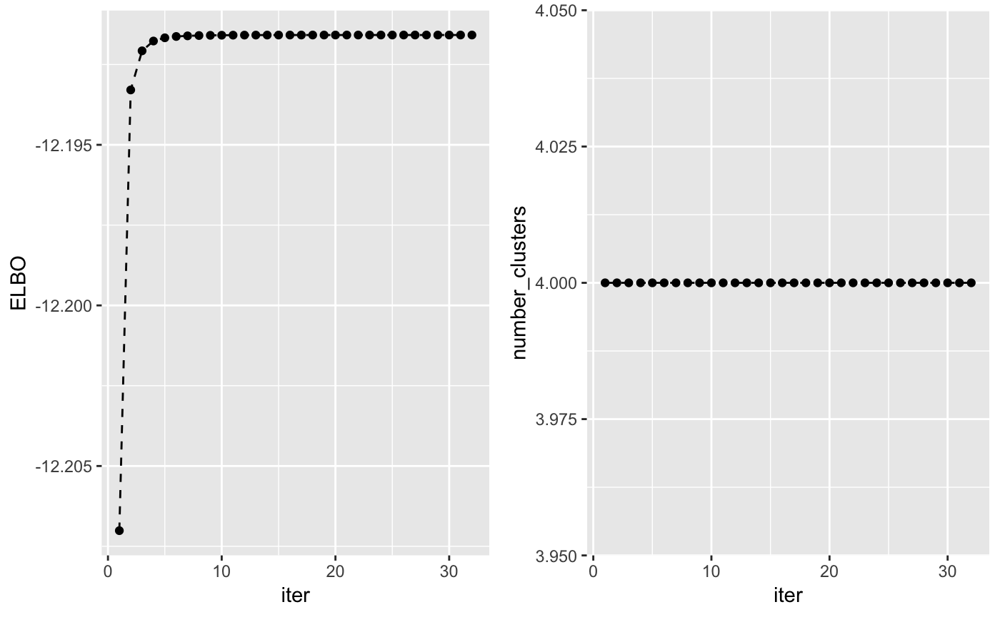
maxK <- 5
n_random_starts <- 15
ELBO <- matrix(0, maxK-1, n_random_starts)
for(k in 2:maxK){
for(j in 1:n_random_starts){
output <- vimix(data, K = k, select = FALSE, indep = TRUE)
ELBO[k-1,j] <- output$L[length(output$L)]
}
}
library(reshape)
ELBO <- melt(t(ELBO))
names(ELBO) <- c('start_n', 'K', 'ELBO')
ELBO$K <- ELBO$K + 1
ggplot(ELBO, aes(x = K, y = ELBO)) + geom_point() + geom_jitter()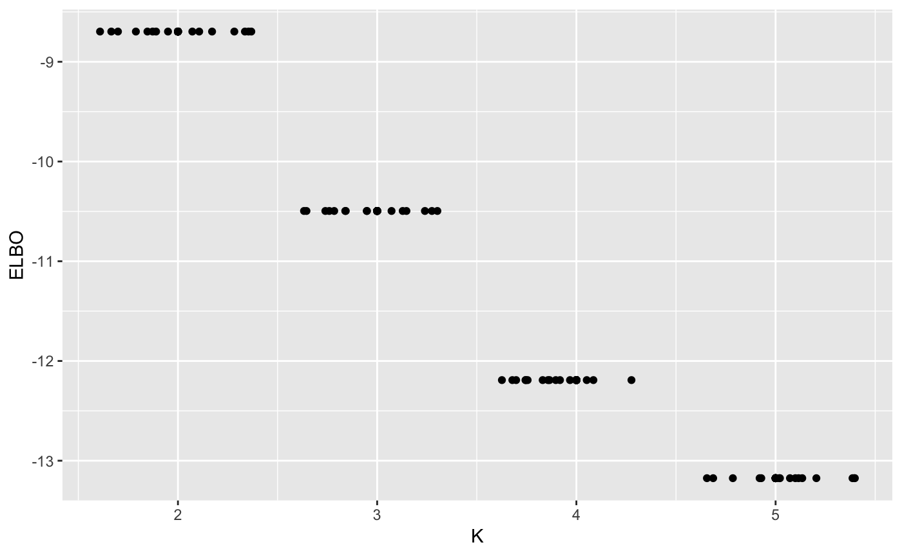